Rajma Masala is a delicious gravy made by cooking red kidney beans with onion, tomatoes and basic spices. Rajma Masala goes well with roti, chapati & rice and a good choice of gravy when we run out of veggies. Let us learn to make Rajma Masala Recipe with step by step pictures and video.
Rajma Masala is one of the authentic Punjabi dish and it is my comfort recipe anytime. I always stock up Rajma(Red Kidney Bean) in my kitchen. Rajma Masala tastes so delicious both with chapathi and rice. Do try this Rajma Masala or Rajma Curry and enjoy!
Rajma Masala or Red Kidney Beans Curry is one of the most popular curries made in North India. I love Rajma Masala so much but sure next to Chole Masala. But my family is not fond of dishes made with rajma so I always try different recipes to impress them. But this Rajma Masala Recipe has become one of my family favorite these days that hubby who has an aversion to rajma loved this gravy.
Soak 1 cup rajma in water for 8 hrs minimum or overnight. Soak in water till rajma is immersed fully and water should be at least 1/2 inch above.
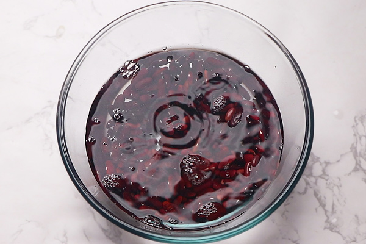Next day rinse well at least twice.
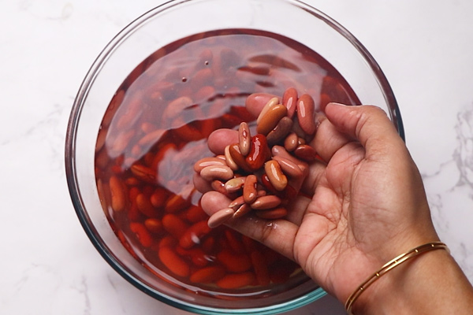Heat 2 tablespoon oil in a kadai. Add 1 teaspoon cumin seeds let it crackle completely.
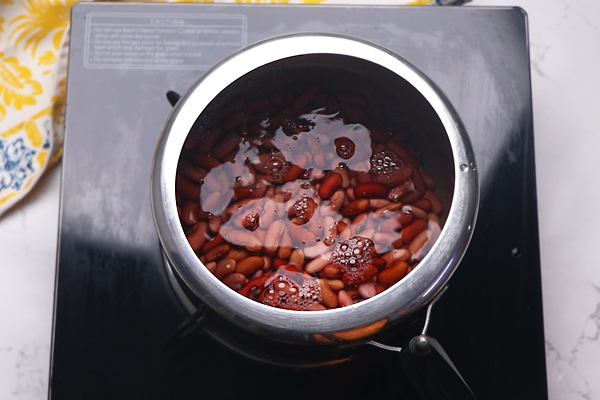Pressure cook for 5 whistles. Let pressure release by itself.
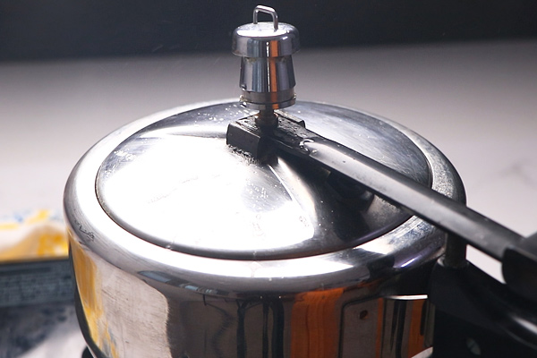Open to check, it should be soft when pressed easily mashable this is the right consistency. cook until soft when pressedPin
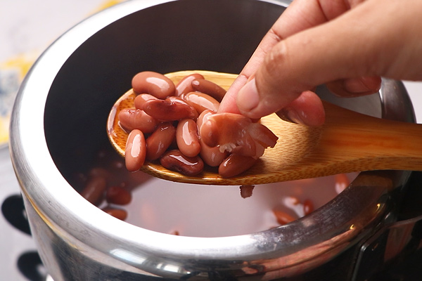Heat 2 tablespoon oil in a kadai. Add 1 teaspoon cumin seeds let it crackle completely.
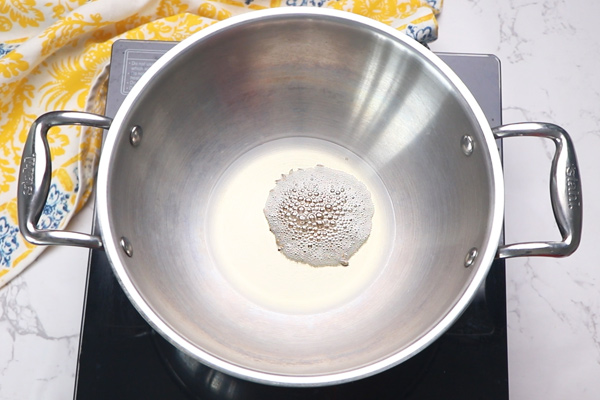Add 1/4 cup onion finely chopped.
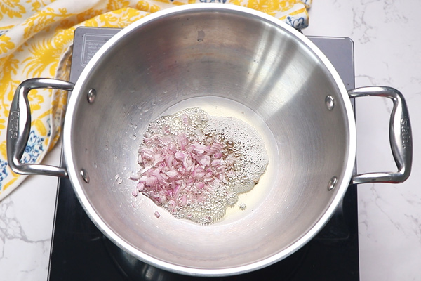.Saute until transparent then add 1 teaspoon ginger garlic paste.
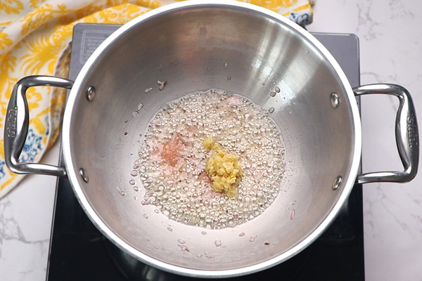Saute for a minute.
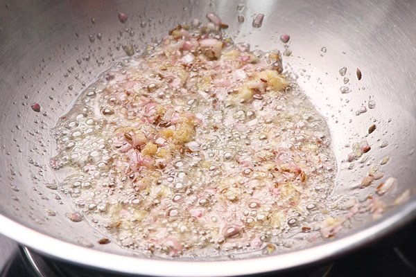Reduce flame to lowest. Add 1/4 teaspoon turmeric powder, 1 heaped teaspoon kashmiri red chilli powder and 1 teaspoon coriander powder. If you want you can add 1/2 teaspoon cumin powder.
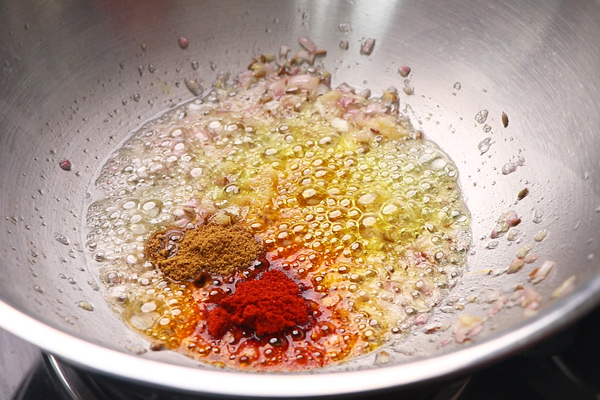Give a quick mix. Do not burn the spice powders.
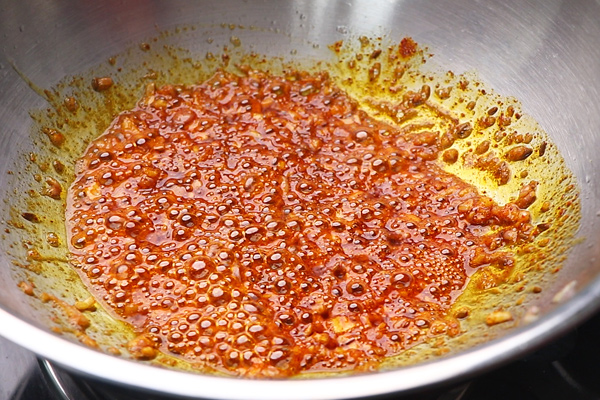Immediately add 1 and 1/2 cups blanched tomato puree. I blanched 4 tomatoes, removed the skin then made a fine puree without adding water.
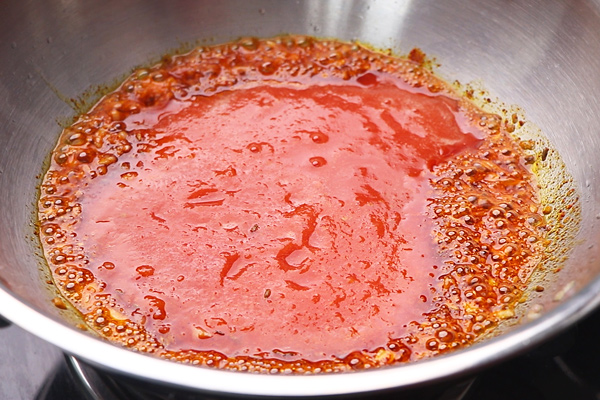.Add 1/2 cup water, then give a quick mix.
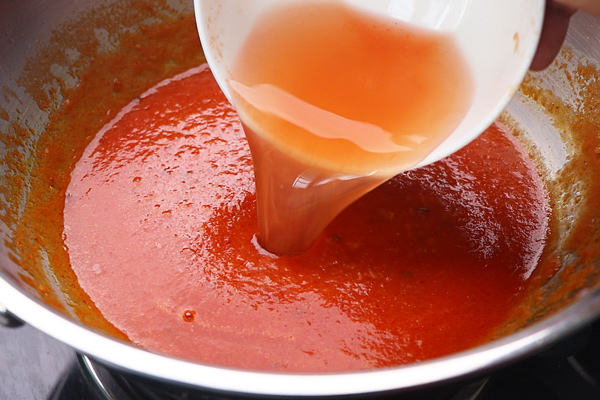.Let the gravy boil for 5-7 mins or until raw smell of the tomatoes and masalas leave. It does not take time as tomato is already blanched. boil well until raw smell leavesPin
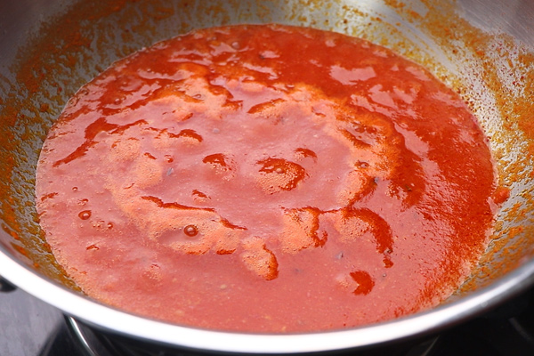.Keep stirring in between to avoid sticking at the bottom
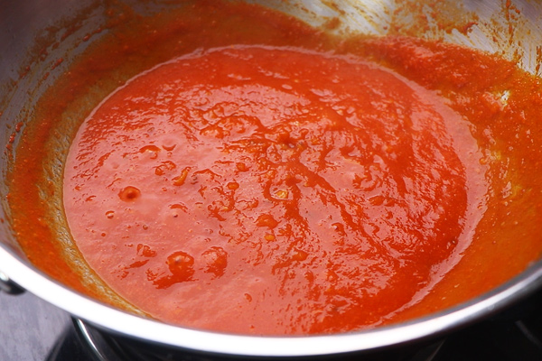Add cooked rajma along with little of cooked water. If there is more of cooked water add only half of it.
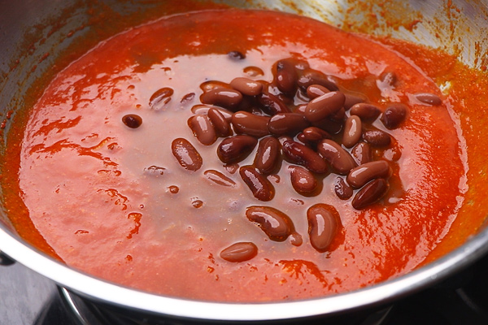Give a quick mix.
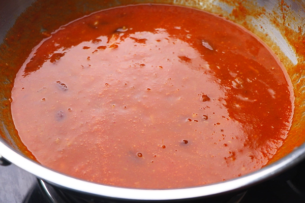Cook covered for 7-10 mins.
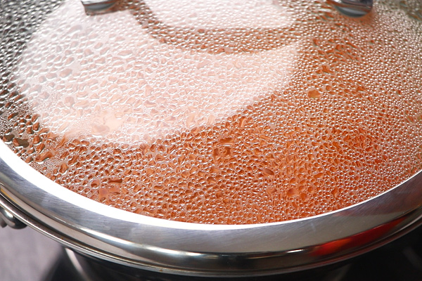Give a quick mix. Mash rajma here and there if you prefer.
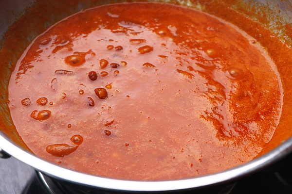Add 1/2 teaspoon sugar, 1 teaspoon kasoori methi(crush and add), 1 tablespoon coriander leaves and 1 teaspoon garam masala powder.
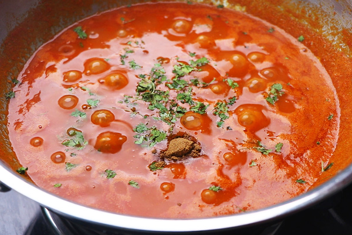